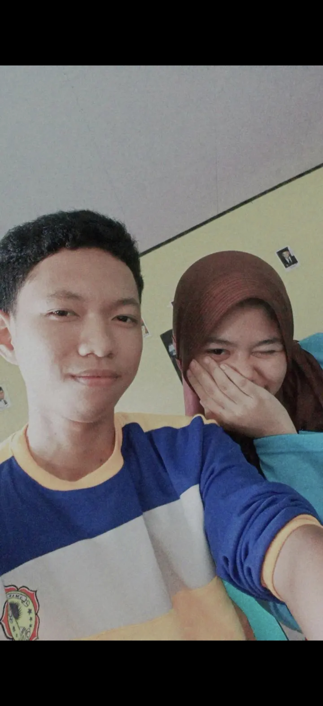

a little birthday page made with love ♡
Happy 20th Birthday,
Salsa Aulia Sabarani 🎂
Hari ini adalah hari yang begitu berarti buatku, karena di hari ini, 20 tahun yang lalu, lahirlah seorang wanita yang kemudian menjadi salah satu manusia paling berharga dalam hidupku.

For You, My Special Girl
Aku ingin ayang tahu, setelah mama, ayang wanita yang begitu aku sayangi dan begitu berarti untukku. Terima kasih karena selama ini ayang selalu ada di sisiku, menemani aku dalam banyak keadaan, mendengarkan ceritaku, menguatkanku ketika aku sedang jatuh, dan tetap bertahan bersamaku melewati banyak hal. Kehadiran ayang mungkin terlihat sederhana, tapi buatku, itu adalah sesuatu yang sangat berharga.
Aku tahu ayang adalah wanita yang kuat. Ayang sudah melewati banyak hal, mungkin ada saat-saat di mana ayang merasa lelah, takut, atau bahkan ingin menyerah. Tapi aku harap ayang selalu ingat bahwa ayang jauh lebih kuat daripada yang ayang kira.
Di usia 20 tahun ini, aku tidak hanya ingin mengucapkan "selamat ulang tahun". Aku ingin mendoakan ayang untuk seluruh kehidupan yang akan ayang jalani setelah hari ini.
Aku ingin melihat ayang berhasil. Aku ingin melihat ayang mendapatkan apa yang selama ini ayang perjuangkan. Aku ingin melihat ayang berdiri di tempat yang selama ini ayang impikan, memakai senyum yang penuh kebanggaan karena akhirnya semua perjuangan ayang terbayarkan.
Dan kalau perjalanan menuju impian itu ternyata tidak mudah, aku juga ingin tetap berada di samping ayang. Menemani ayang ketika ayang bahagia, menggenggam tangan ayang ketika ayang lelah, dan mengingatkan ayang untuk terus berjalan ketika ayang mulai meragukan diri ayang sendiri.
Aku tidak tahu bagaimana kehidupan kita nanti, tapi satu hal yang aku tahu, aku sangat mencintaimu sayang. Aku ingin melihat ayang tumbuh menjadi wanita yang ayang impikan, mencapai semua hal yang ayang inginkan, dan menjalani kehidupan yang indah.
Aku juga ingin meminta maaf untuk semua hal yang selama ini mungkin sering membuat ayang lelah menghadapi aku.
Maaf karena sampai sekarang aku belum bisa menjadi cowok yang sempurna buat ayang. Maaf karena aku masih banyak kurangnya, masih sering melakukan kesalahan, masih sering bersikap seperti anak kecil, dan mungkin belum bisa menjadi pasangan seperti yang seharusnya ayang dapatkan.
Maaf karena aku sering sedikit-sedikit marah, bahkan untuk hal-hal yang sebenarnya mungkin tidak perlu aku marahi. Maaf karena ketika sedang emosi, aku terkadang tidak bisa mengontrol perkataanku. Maaf karena aku sering sedikit-sedikit bilang "putus" tanpa benar-benar memikirkan bagaimana perasaan ayang setelah mendengarnya.
Dan yang paling aku sesali, maaf karena aku sering membuat ayang menangis.
Aku tahu mungkin ada saat-saat di mana ayang hanya ingin dicintai dan dimengerti olehku, tapi justru aku yang membuat ayang merasa sedih. Aku tahu kata maaf tidak akan langsung menghapus semua rasa sakit yang pernah aku sebabkan. Karena itu, aku tidak ingin hanya meminta maaf dan mengulanginya lagi. Aku ingin berubah.
Aku masih terus belajar untuk menjadi cowok yang lebih baik buat ayang. Aku sedang berusaha memperbaiki sifatku, belajar mengendalikan emosiku, belajar untuk lebih sabar, lebih mengerti ayang, dan lebih menjaga perasaan ayang.
Aku mungkin belum bisa menjadi cowok yang ayang inginkan sekarang, tapi aku ingin terus berusaha sampai suatu hari nanti aku bisa menjadi seseorang yang benar-benar bisa ayang banggakan dan ayang percaya untuk berjalan bersama ayang.
Aku tidak mau ayang hanya mendapatkan janji dariku. Aku ingin ayang melihat perubahan itu dari bagaimana aku memperlakukan ayang setiap harinya.
Jadi, maaf ya sayang... ❤️
• Maaf untuk semua marahku yang tidak perlu.
• Maaf untuk semua perkataanku yang pernah menyakiti ayang.
• Maaf untuk semua sikapku yang membuat ayang menangis.
• Maaf untuk setiap kali aku membuat ayang merasa tidak dihargai.
• Dan maaf karena terkadang aku membuat ayang merasa bahwa mencintaiku itu melelahkan.
Terima kasih karena meskipun aku masih banyak kurangnya, ayang masih mau berada di sampingku dan memberiku kesempatan untuk belajar menjadi lebih baik.
Aku tidak berjanji akan menjadi cowok yang sempurna, karena aku tahu aku tidak akan pernah sempurna.
Tapi aku berjanji akan terus berusaha menjadi cowok yang lebih baik dari diriku yang kemarin.
Aku ingin suatu hari nanti ketika ayang melihat kembali perjalanan kita, ayang bisa berkata, "Ternyata dia benar-benar berubah. Ternyata semua usahanya selama ini nyata."
Dan kalau sampai hari itu tiba, aku ingin ayang tahu bahwa salah satu alasan terbesar aku mau terus memperbaiki diriku adalah karena aku sangat mencintaimu sayang.
Maaf ya, sayang. Untuk semuanya. ❤️
Semoga di usia 20 tahun ini, semakin banyak hal baik yang datang kepadamu. Semoga langkahmu selalu dimudahkan, cita-citamu satu per satu tercapai, dan selalu diberikan alasan untuk tersenyum.
Terima kasih sudah hadir di hidupku dan menjadi bagian dari perjalanan hidupku sampai sejauh ini.
Selamat ulang tahun, wanita yang paling aku sayang❤️
Semoga suatu hari nanti aku bisa melihat ayang menggapai semua cita-citanya, dan semoga saat hari itu tiba, aku masih menjadi orang yang bisa berdiri di samping ayang sambil tersenyum dan berkata:
"Aku tahu ayang pasti bisa. Aku selalu percaya sama ayang."
I love you, sayang. Selamat ulang tahun yang ke-20❤️
Ku harap ayang dengerin makna dari lagu itu karna dalam lagu itu aku menyimpan harapan buat hubungan kita kedepannya, oh iya aku juga bayar mahal mahal biar lagu itu bisa dibawakan langsung oleh temen ayang itu😸